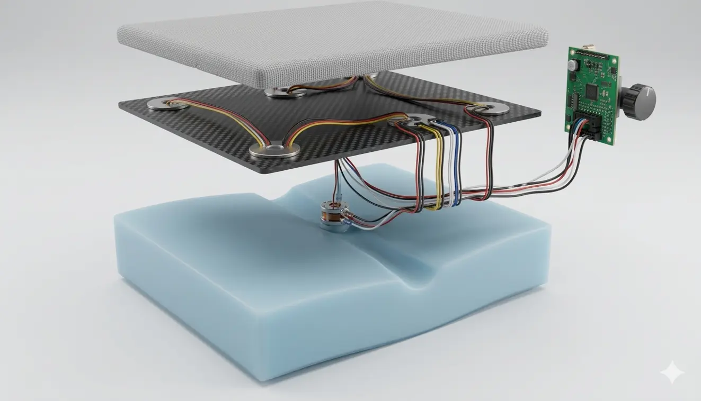

Team AYLO
Dynamic Sitting Support
A dynamic cushion uses pressure sensors to detect static sitting and provides gentle vibrations that encourage desk workers to move. The subtle haptic feedback supports healthier routines without interrupting concentration.
Team: Arkaprabha Gupta, Lukas Hennecke, Omar Bahaji and Yan-Tung Poon.